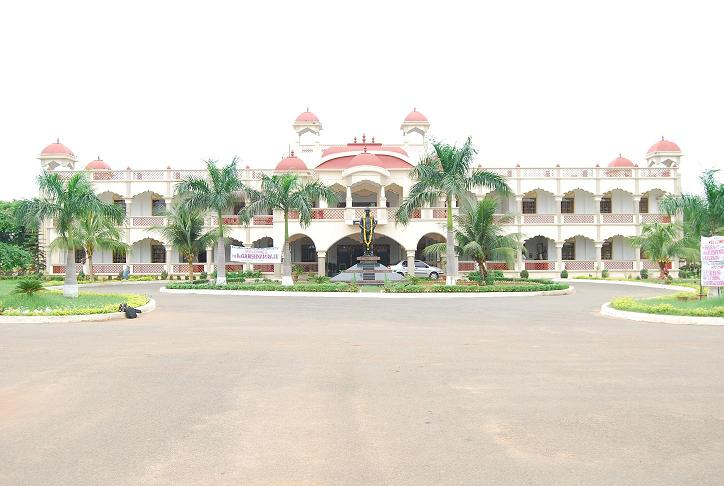
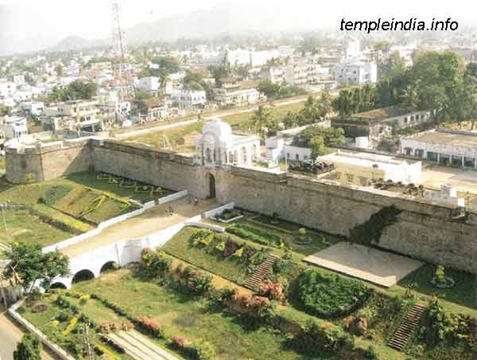

Bhargav Reddi
Bhargav Reddi was born in 24th March 1996 in Kanampetta village in Andra Pradesh. He did most of spent his childhood in Gujarat . He had lot of interest for Drawing, Painting etc. He is reconginezed for his achievements in Swimming.

Bhargav Reddi was born in 24th March 1996 in Kanampetta village in Andra Pradesh. He did most of spent his childhood in Gujarat . He had lot of interest for Drawing, Painting etc. He is reconginezed for his achievements in Swimming.
Bhargav Reddi did his Schooling in The Aditya Birla Public School, Bharuch , Gujarat and is studying in MVGR college of Engineering, Vizianagaram
Bhargav Native place is Vizianagaram.
